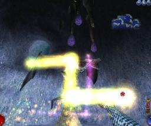

Arx Libertatis is a cross-platform, open source port of Arx Fatalis, a 2002 first-person role-playing game developed by Arkane Studios.

Spellcasting in Arx Fatalis
Arx Fatalis features crafting, melee and ranged combat, as well as a unique casting system where the player draws runes in real time to effect the desired spell.
The Arx Libertatis source code is based on the publicly released Arx Fatalis sources and available under the GPL 3+ license. This does however not include the game data, so you need to obtain a copy of the original Arx Fatalis or it's demo to play Arx Libertatis.
Arx Libertatis is mainly developed on Windows and Linux, but has also been successfully run under Mac OS X and FreeBSD.